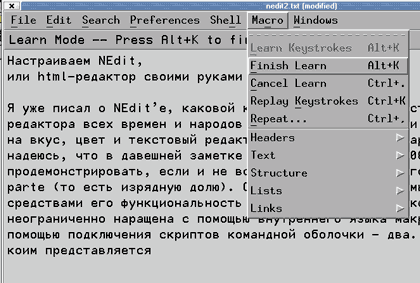
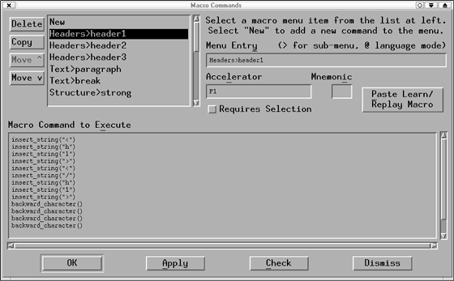
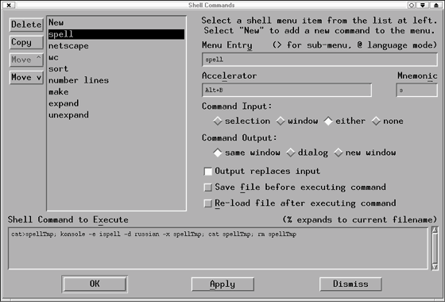

Настраиваем NEdit, или HTML-редактор своими
руками
Алексей Федорчук
[email protected],
http://linuxsaga.newmail.ru/
В предыдущей статье, посвященной UNIX-редактору
NEdit*, автор попытался продемонстрировать если и не все
богатство штатных возможностей NEdit, то buono parte (т.
е. изрядную их долю). Однако подлинная ценность этого
редактора состоит в том, что ее функциональность можно
почти неограниченно наращивать с помощью внутреннего
языка макрокоманд и с помощью подключения скриптов
командной оболочки. Начнем с более простого способа,
коим представляется создание макрокоманд.
*А. Федорчук. Текстовый редактор NEdit -
на пути к идеалу. Byte/Россия, №12, декабрь 2000.
Создание макрокоманд
Разумеется, макрокоманды на встроенном языке NEdit
можно создавать обычным образом, т. е. путем написания
их кода "руками", благо особенности языка вполне внятно
документированы в системе справки. Однако есть и другой
способ, который для начала может оказаться более
простым, - это протоколирование действий. Для этого
требуется (рис. 1):
- включить режим протоколирования (через меню Macro
- Learn Keystrokes или комбинацию клавиш Alt+K);
- произвести с клавиатуры (но не с помощью мыши!)
все необходимые действия в той последовательности, в
какой мы хотим их сохранить;
- завершить режим протоколирования (меню Macro -
Finish Learn или повторным нажатием клавиш Alt+K);
- в случае ошибки при наборе команд - прервать
протоколирование (меню Macro - Cansel Learn) и,
включив его еще раз, повторить требуемые действия уже
без ошибок.
 |
Рис. 1. Протоколирование
макрокоманд в редакторе NEdit.
|
Запротоколированная последовательность действий будет
функционировать в течение данного сеанса работы с Nedit;
первый раз ее можно вызвать через меню Macro - Reply
Keystrokes, а в дальнейшем через Macro - Repeat. Однако
при следующем запуске Nedit она будет утрачена.
Чтобы этого не случилось, следует сохранить созданную
последовательность команд в виде пунктов меню Macro. Для
этого, успешно завершив протоколирование данного
макроса, отправляемся в меню Preferences, выбираем там
пункт Default Settings, а в нем - опцию Customize Menu.
Выбрав эту опцию, обнаружим пункт Macro Menu, вызывающий
панель Macro Commands (рис. 2).
 |
Рис. 2. Панель Macro Commands.
|
В списке доступных команд (в левой части панели)
фиксируем курсор на пункте New. В поле Menu Entry задаем
название команды и, при необходимости, название более
высокого уровня для группы сходных команд, например,
таким образом:
Group commands>Command1
(без пробелов перед знаком > и после него). Здесь
же можно приписать команду к какому-либо из доступных
языковых режимов. Например,
Group commands>Command1@SGML/HTML
будет указывать, что данная команда активизируется
только при выборе языкового режима SGML/HTML.
Затем заполняем поле Accelerator. Здесь за командой
можно закрепить какую-либо клавишу (из числа, например,
функциональных, или Windows-клавиш) или их комбинацию:
например, сочетание клавиш Alt или Ctrl (возможно, еще в
сочетании с Shift) с какой-либо буквой, желательно
имеющей мнемонический смысл. Для этого нужно просто
зафиксировать курсор в поле Accelerator и нажать
требуемую клавишу (например, F12) или их комбинацию
(допустим, Ctrl+литера). Следует только внимательно
следить, чтобы эта комбинация не использовалась для
вызова штатных функций NEdit: не исключено, что при этом
она не будет вызывать ни старого, ни нового
закрепленного действия.
Вслед за этим можно заполнить поле Mnemonic, введя в
него какую-либо букву из имени нашей команды (так, как
оно указано в поле Menu Entry). При вызове меню буква
эта будет подчеркнута и теоретически может
использоваться для быстрого вызова команды (в сочетании
с клавишей Alt). Однако на деле это работает далеко не
всегда. Вернее, почти всегда не работает, поскольку
большинство букв латинского алфавита уже задействованы
для штатных команд NEdit.
Наконец, последнее из предварительных действий -
включение, если требуется, переключателя Requires
Selection. Он предназначен для команд, которые
осуществимы только с предварительно выделенными
фрагментами (это, например, копирование, вырезание и
т.д.).
А вот теперь нажимаем экранную клавишу Paste
Learn/Replay Macro (в правой части панели). И текст
макроса волшебным образом появляется в поле Macro
Command to Execute, где его можно любым образом
отредактировать, дополнить, сократить и т.д. После чего
нажимаем клавишу OK, выходя из режима редактирования
Macro Menu, - и можем испробовать новую функцию на
практике. Если все работает нормально - сохраняем
текущую ситуацию через меню Preferences - Save Defaults.
Изменения при этом, как уже говорилось, фиксируются в
секции
nedit.macroCommands:
файла .nedit из пользовательского каталога. Там же их
можно отредактировать вручную.
Таким образом можно насытить меню редактора NEdit
командами для выполнения часто требующихся действий,
отсутствующих в штатном комплекте (например, как будет
показано ниже, для ввода тегов HTML). Однако в некоторых
случаях этого может оказаться недостаточно. Иногда
возникает потребность в систематическом исполнении
каких-либо внешних программ, например, команд оболочки.
Конечно, в этом случае можно задействовать стандартное
окно терминала либо обратиться к строке мини-терминала,
вызываемой через меню Shell - Execute Command, или к
клавишной комбинации (Alt+X). Можно еще прибегнуть к
непосредственному вводу команд в поле редактирования
NEdit с последующим их запуском (через меню Shell -
Execute Command Line). Однако все это не обеспечит
достаточно комфортной работы.
К тому же подчас необходимо, чтобы команда оболочки
выполнялась по отношению к редактируемому в данный
момент в NEdit документу (пример - команда ispell для
проверки орфографии). И тут нам на помощь приходит еще
одна возможность повышения функциональности Nedit -
встраивание команд оболочки.
Встраивание команд оболочки
Для такого встраивания требуется редактирование меню
Shell (через выбор Preferences - Default Settings -
Customize Menu - Shell Menu). Выбрав соответствующие
пункты приведенной последовательности, вызываем панель
Shell Commands (рис. 3) и выбираем из списка доступных
команд пункт New. Подобно тому, как это проделывалось
для макросов, заполняем поля Menu Entry, т. е. имени
команды (оно также может быть иерархически построено и
привязано к языковому режиму меню), Accelerator (для
закрепления комбинаций клавиш) и Mnemonic (для выделения
литеры быстрого вызова).
 |
Рис. 3. Панель Shell Commands.
|
Затем определяемся с входными элементами команды в
строке переключателей Command Input. Здесь можно
предписать команде исполняться либо для выделенного
фрагмента (selection), либо для текущего окна (window),
либо для каждого элемента документа (either), либо ни
для чего (none). Объяснить смысл каждого переключателя в
общем виде я несколько затрудняюсь, но на практике смысл
их для каждой конкретной команды обычно достаточно
прозрачен.
Аналогично поступают и с выходными элементами
команды, каковые могут быть показаны в текущем или новом
окне, а также в виде диалоговой панели.
Следующая ниже группа переключателей при установке в
положение On предписывает:
- замещать элемент ввода элементом вывода (Output
replace input);
- сохранять текущий файл перед выполнением команды
(Save file before executing command);
- перечитывать его после выполнения команды (Re-load
file after execute command).
Определившись и с этим, можно непосредственно
задавать команду вместе со всеми требуемыми параметрами
и их значениями. Это делается в поле ввода команды
(Shell Command to Execute), точно так же, как в
командной строке консоли или терминального окна.
Однако можно и набрать команду непосредственно в поле
редактирования NEdit, после чего просто скопировать ее
(с помощью мыши или клавишных комбинаций) в поле ввода
команды. Преимущество последнего способа в том, что
предварительно (с помощью меню Shell - Execute Command
Line) можно проверить работоспособность команды,
поскольку она запускает на выполнение ту строку текущего
файла, на которой зафиксирован курсор (разумеется, если
эта строка имеет смысл и синтаксически правильна). В
противном случае в теле документа автоматически появится
сообщение об ошибке. Например:
netscape
An error occurred running /usr/lib/netscape/netscape-communicator.
Или даже полная справка по использованию команды, как
в случае
ispell
Usage: ispell [-dfile | -pfile | -wchars | -Wn | -t |
-n | -x | -b | -S | -B | -C | -P | -m | -Lcontext | -M
| -N | -Ttype | -V] file
Руководствуясь этими сообщениями, создаваемую команду
можно отредактировать до работоспособного состояния.
Можно, разумеется, и просто скопировать успешно
запускаемую команду из окна терминала.
Завершив создание новой команды, принимаем введенные
изменения (при помощи экранной кнопки Apply) или выходим
из режима редактирования Shell, нажав OK. Затем,
проверив правильность созданной команды, сохраняем
ситуацию (через Save Defaults) для использования в
дальнейшем.
Не могу поручиться, что я внятно изложил возможности
NEdit по созданию и редактированию макрокоманд и команд
оболочки. И потому попробую проиллюстрировать эти
возможности на конкретном примере - создании серии
связных директив, превращающих NEdit в самодельный
HTML-редактор.
Самодельный HTML-редактор
Я прекрасно понимаю, что сказанное ниже способно
вызвать у профессионального программиста лишь
ироническую улыбку. Однако это хорошо демонстрирует весь
спектр возможностей редактора Nedit, который могут
настроить под конкретную задачу даже люди с невысоким
уровнем подготовки.
Итак, перед нами стоит задача составления достаточно
длинных и относительно структурированных документов,
предназначенных в первую очередь для размещения в Сети.
При этом не исключается возможность, что они в
дальнейшем будут воплощены и на бумаге в виде журнальных
или книжных публикаций (для чего может потребоваться
импорт документа в текстовый процессор или программу
верстки). Способов комфортного выполнения этой работы
несколько. Что в таком случае можно делать?
- Набирать текст в текстовом процессоре (таком как
StarWriter из комплекта StarOffice) с дальнейшим
экспортом в формат HTML - качество HTML-кода при этом
получается настолько низкое, что пользоваться этим
методом для серьезной работы нельзя.
- Набирать текст в визуальном редакторе Web-страниц
типа Netscape Composer; однако к HTML-коду невысокого
качества здесь добавляются очень скромные возможности
форматирования и контроля за HTML-кодом.
- Набирать текст в любом подходящем по возможностям
HTML-редакторе с одновременной расстановкой требуемых
тегов его штатными средствами; однако далеко не всегда
такие редакторы столь универсальны, как нам требуется;
к тому же оба известных мне полнофункциональных
HTML-редактора под Linux (WebMaker и Quanta) обладают
общим недостатком: они позволяют набирать текст либо в
одну строку (что неудобно визуально), либо с переносом
слов через фиксированное количество знаков с
образованием символа возврата каретки (что совершенно
ни к чему при импорте в текстовый процессор).
- Набирать текст в обычном текстовом редакторе с
последующим помещением в редактор HTML-кода, где и
осуществляется его (текста) разметка; но, помимо
сложностей с двухэтапным созданием документа, такой
метод приводит к появлению двух содержательно
идентичных (по идее) файлов, а какой из них более
актуален - удается вспомнить не всегда.
Поэтому оптимальным представляется составление
документа в текстовом редакторе с одновременной
разметкой тегами HTML. Однако проставлять теги вручную,
даже если помнишь все наизусть, - занятие
малопроизводительное. Посему возникает естественное
желание эту процедуру автоматизировать, благо NEdit с
его развитым макроязыком и простыми средствами
применения последнего такую возможность обеспечивает.
Для начала определимся, какие теги требуются для
каждодневного использования. Это:
1) заголовки нескольких уровней - <h1></h1>,
<h2></h2> и т.д.;
2) теги начала абзаца (<p>) и разрыва строки (<br>);
3) структурные теги: emphasis (<em></em>) и
preformatted text (pre и /pre);
4) всякого рода списки - маркированные (<ul></ul>),
нумерованные (<ol></ol>), списки с определениями
и их элементы (<dl></dl>, <li>, <dt>, <dd>);
5) гиперссылки (<a href=""></a>) и именованные якоря
(<a name=""></a>).
Вот в такой последовательности и будем создавать
соответствующие макросы. Включаем режим протоколирования
(через меню Macro - Learn Keystrokes или комбинацией
клавиш Alt+K) и просто-напросто набираем с клавиатуры
последовательность символов.
Для обеспечения непрерывности набора логично вернуть
курсор в позицию между открывающим и закрывающим тегами,
для чего соответствующее количество раз нажимаем клавишу
Left. После чего завершаем протоколирование (через меню
Macro - Finish Learn или повторным нажатием Alt+K), при
помощи меню Macro Replay Keystrokes (или комбинации
Ctrl+K) проверяем правильность исполнения и переходим в
меню Preferences - Default Settings - Customize Menu -
Macro Menu. В появившейся панели Macro Commands (см.
рис. 2) указываем в поле Menu Entry:
Headers>header1
В поле Accelerator приписываем команде клавишу вызова
(например, F1, благо она не закреплена за вызовом
справки), при желании определяем мнемоническую литеру и
нажимаем экранную кнопку Paste Learn/Reply Macro. В
результате в поле Macro Command to Execute появляется
примерно такой код:
insert_string("<")
insert_string("h")
insert_string("1")
insert_string(">")
insert_string("<")
insert_string("/")
insert_string("h")
insert_string("1")
insert_string(">")
backward_character()
backward_character()
backward_character()
backward_character()
backward_character()
Поскольку правильность макрокоманды мы уже проверили,
нажимаем Apply для ее включения в список и переходим к
следующему пункту нашей программы. Конечно, можно
повторить протоколирование набора для тегов заголовков
всех уровней последовательно. Но проще с помощью
экранной клавиши Copy скопировать только что созданный
макрос, изменить в поле Menu Entry его название с
header1 на header2, закрепить за ним клавишу F2 и в поле
Paste Learn/Reply Macro отредактировать код вручную,
заменив строку
insert_string("1")
на
insert_string("2").
Подобную процедуру придется повторить для заголовков
всех требуемых уровней (хотя вряд ли их число превысит
четыре).
Затем переходим к созданию макросов для наиболее
часто требующихся при наборе тегов абзаца и разрыва
строки. Порядок действий идентичный: протоколирование
ввода тега, вызов панели Macro Commands, описание имени
команды (с учетом ее положения в иерархическом меню),
закрепление за ней свободной комбинации "горячих"
клавиш, помещение "заученного" кода макроса в поле
команд для исполнения, включение новой макрокоманды в
список доступных. И так для всех тегов, которые, как нам
представляется, требуются постоянно и ежедневно...
Завершив создание макросов, следует не забыть
сохранить их в меню с помощью Preferences - Save
Defaults. После чего они будут доступны в последующих
сеансах NEdit, поскольку размещаются в файле .nedit. в
секции
nedit.macroCommands:
На сайте http://linuxsaga.newmail.ru/
приведено содержимое этой секции после того, как я
разработал серию макросов для своих личных целей. Не
судите строго: с точки зрения программиста-профессионала
ничего замечательного там не содержится. Но а) этот
процесс занял у меня считанные минуты, и б) результатов
его мне вполне хватает в 90 случаях из 100.
Чего еще хотелось бы от несложного HTML-редактора? Ну
конечно, визуализации производимых изменений в
каком-либо внешнем браузере (каковым, с большой долей
вероятности, будет Netscape Navigator текущей версии).
Для этого мы прибегнем к настройке меню Shell
(Preferences - Default Settings - Customize Menu - Shell
Menu). В соответствующей панели (см. рис. 3) определяем,
как описано выше, поле имени команды. Если есть желание
просматривать плоды своих трудов в разных браузерах,
можно создать иерархическое меню, например:
Browser>netscape Browser>lynx Browser>opera
оставляя, скорее всего, пустыми поля Accelerator и
Mnemonic (не столь это частая процедура - вызов внешнего
браузера, чтобы тратить на нее драгоценную клавишную
комбинацию, коих и так не в избытке).
А затем вводим в поле Shell Command to Execute строку
konsole -e netscape %
или иную любимую терминальную программу в качестве
первого элемента (xterm. rxvt, etc.). И ни в коем случае
не забываем параметр %, предписывающий браузеру
отображать именно редактируемый в NEdit файл.
Теперь разбираемся с переключателями. В линейке
Command Input логично отметить значение None (иначе есть
риск получить по закрытии Netscape пустой файл), в
линейке Command Output - значение same window. Кроме
того, не худо бы включить также опцию сохранения
текущего файла перед выполнением команды (Save file
before executing command).
Принимаем изменения (экранной клавишей Apply) и
проверяем действие команды. Если все нормально, выбор из
меню Shell пункта netscape должен вызвать появление
сначала терминального окна, а затем - окна браузера
Netscape Navigator, отображающего редактируемый файл в
текущем его состоянии. Если да - сохраняем ситуацию
(через меню Preferences - Save Defaults), и собственный
HTML-редактор готов!
Как и результат редактирования меню макрокоманд,
результаты действий по встраиванию команд оболочки
попадают в файл .nedit, в секцию
nedit.shellCommands:
где их можно в дальнейшем редактировать
непосредственно.
Эта статья написана не только к вящей славе редактора
NEdit. Автор руководствовался и собственными корыстными
соображениями: вдруг кто-нибудь напишет достаточное
количество качественных наборов макросов для NEdit на
все случаи жизни?